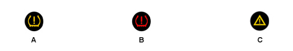
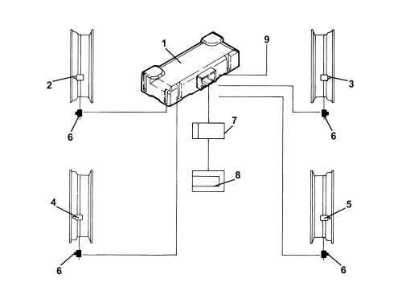
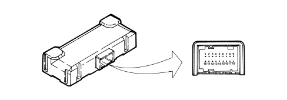
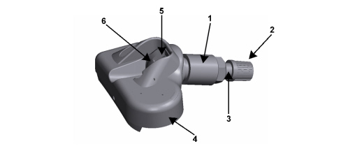
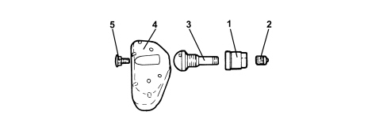
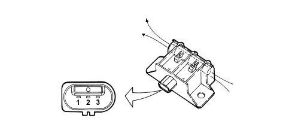

TPMS SYSTEM
General specificationsThe TPMS Tyre Pressure Monitoring System checks the pressure of the tyres sending the necessary information to the Body Computer via the B-Can. In particular, if the inflation pressure is higher or lower than it should be, the system activates an insufficient pressure signal in the instrument panel or warns that one or more of the tyres is punctured. The tyre pressure monitoring system comprises: - 4 R.F. transmitter pressure sensors located inside the tyre on the wheel rim;- 4 L.F. transmitters fitted on the bodyshell in the respective wheel housings; - 1 R.F. management and reception control unit fitted inside the (right) bracket supporting the rear parcel shelf; - 1 warning light/symbol signalling irregular pressure in one or more tyres, in conjunction with the read out on the display  A: - Warning light in comfort (medium) panel for all signals for the TPMS except failure A: - Symbol in matrix panel (high) for all signals for the TPMS except insufficient tyre inflation pressure B: - Symbol in matrix panel (high) signalling insufficient tyre inflation pressure C: - Warning light in comfort panel (medium) signalling system failure The pressure sensors continuously check that the tyre inflation pressure is correct. If a failure or a loss in pressure is detected, the sensor transmits a message via R.F. modulated in AM at a frequency of 433.92 MHz to the receiver control unit.  1. Tyre pressure control unit 2. Left front sensor/transmitter inside the wheel rim 3. Right front sensor/transmitter inside the wheel rim 4. Left rear sensor/transmitter inside the wheel rim 5. Right rear sensor/transmitter inside the wheel rim 6. Aerials (transmitters) 7. Body Computer Node (receives the signals transmitted by the sensors from the TPMS control unit via the A-bus) 8. Instrument Panel Node 9. Serial k line for control unit and TPMS fault diagnosis Transmission of tyre status via a-bus/b-canThe tyre pressure control unit (CPP) acquires information, via radiofrequency, from the sensors, relating to the state of all four tyres and transmits it via the B-Can line. The control unit transmits the following information: - CPP control unit programming/characterization status; - possible entire system fault; - tyre position; - tyre inflation pressure status. Tpms operating principleAt the key-on the control unit sends the Body Computer a confirmation signal indicating that it is working properly via the BUS serial line. The aerials (transmitters) send a 125 kHz signal to the sensors on the wheels so that the initialization takes place. The sensors, in turn, measure the pressure and send an RF signal for the tyre pressure and temperature status; the receiver receives this transmission from the snsors inside the tyres immediately forwarding the information on the serial B-Can. When the value of the pressure goes below or above a the pre-set level, the control unit signals the alarm status directly to the instrument panel, via the B-Can, switching on the special warning light and visual and acoustic warning messages. Within 2.5 seconds of the key-on, the TPMS control unit will start its periodic transmission of messages; if this does not take place within this period, the control panel will signal the TPMS failure condition. The same will take place if the transmission of of the TPMS_Status message is absent for more than 2.5 seconds at operating temperature (after the switch due to the key-on). Intervention levelsThere are two intervention levels which are stored in the receiver memory. The first (known as the CHECK level) is designed to signal if the pressure of one or more of the tyres is slightly below or slightly above the optimum level in which case the driver should check it and restore the correct value: The intevention levels for the for first CHECK level are as follows: - drop in pressure of 0.3 bar in relation to the nominal value (with tyre hot) - drop in pressure of 0.45 bar in relation to the nominal value (with tyre cold) - tyre pressure higher than 3.4 bar. The second level (known as the WARNING level), on the other hand, is established to signal a loss in pressure due to the fact that one or more of the tyres is presumed to have a puncture: WARNING = drop in pressure of 0.5 bar in relation to the nominal value. Display in instrument panelThe instrument panel acquires these signals and manages the readings as described below. When the pressure value of one or more of the tyres exceeds the first CHECK level (nominal pressure - 0.3 bar when hot or - 0.45 when cold) (pressure above 3.4 bar), the TPMS warning light/symbol comes on in the instrument panel and an alphanumerical message appears in the display e.g. "Check tyre pressure", right rear or left rear. When the signalling cycle is over only the warning light remains activated in the panel until the correct pressure is restored. The warning cycle is repeated after 10 minutes (once). The CHECK level includes a general message without indicating the wheel in question (right front, right rear, etc.). Warning light/symbol associated with the message: "Check tyre pressure" If the panel receives a signal that the pressure is below the WARNING level (nominal pressure -0.5 bar), the TPMS warning light/symbol comes on and the message appears in the alphanumerical display "Insufficient tyre inflation pressure - right front - do not continue" accompanied by a buzzer dependent on the "priority 0" fault logic (See 5560). When the signalling cycle is over only the warning light remains activated in the panel until the correct pressure is restored. A: - Warning light in comfort control panel (medium) together with the message: "Insufficient tyre inflation pressure, left front: do not continue" B: - Warning light in matrix control panel (high) together with the message: "Insufficient tyre inflation pressure, left front: do not continue" If there is a fault in the tyre pressure control unit, the "general failure" warning light comes on and the corresponding alphanumerical display shows "Tyre monitoring system not available". A: - Warning light in comfort control panel (medium) together with the message: "Tyre pressure monitoring not available" B: - TPMS symbol in matrix control panel (high) together with the message: "Tyre pressure monitoring not available" This takes place in the following cases: - fault in the control unit wiring and circuit; - no signal received from one or more sensors (sensor battery run down, faulty, broken) - TPMS control unit faulty - one or more aerials (initiators) faulty - use of one or more wheels without sensors (e.g. with snow tyres). The display takes place about 12 minutes after the fault is detected. The display occurs when the CAN message is received if and only if the vehicle speed is above 20 km/h for longer than 30 seconds. System not programmed: if the tyre pressure control unit has not been programmed, the TPMS warning light/symbol will come on in accordance with the following modes. A: - Warning light flashing in comforf panel (medium) B: - Symbol on in matrix panel (high) System disabled: the system can be disabled on the customer''s request if the vehicle equipped with a TPMS system has tyres without pressure sensors (e.g. winter tyres). In this case the control panel will not provide a TPMS signal. When the customer fits new wheels with sensors, they should go to a Fiat Dealership who will restore the operation of the system. To disable the system, give the appropriate command to the control unit using the Examiner (obviously, at the key-on), then, in order to ensure that the operation is successful, wait at least 10 seconds before removing the key (key-off, a manoeuvre required for the command to be received), otherwise the procedure will not be successful and the control unit will not be disabled. Tyre pressure control unit (cpp)The CPP is connected to the rear wiring by means of a bridge. The receiver electronics is housed in a plastic casing that is not screened against RF. The fastenings allow the control unit to be fitted securely in position (preventing rotation). The CPP is an electronic component which, connected to the B-Can serial line, manages the tyre pressure control function; the fault diagnosis is managed using the same serial line (B-Can). The system is also capable of diagnosing the operation of each sensor and the entire system. It detects: - faults in the control unit wiring and circuit; - no signal received from one or more sensors; - faults in the actual control unit; - one or more aerials (initiators) faulty. If there is a break in the control unit power supply, the new sensor ID codes should not be stored in the control unit memory; the IDs and the position of the sensors, as well as the error codes (fault diagnosis) remain stored in the control unit EEPROM. CONTROL UNIT PIN OUT  1. Power supply +30 2. L.F. transmitter power supply 3. Left rear L.F. transmitter signal 4. Left front L.F. transmitter signal 5. Right front L.F. transmitter signal 6. Right rear L.F. transmitter signal 7. N.C. 8. Can_L_Bus 9. Can_H_Bus 10. Earth 11. N.C. 12. L.F. transmitter earth 13. L.F. transmitter earth 14. L.F. transmitter earth 15. L.F. transmitter earth 16. Supply controlled by ignition (+15) 17. N.C. 18. N.C. CONTROL UNIT REPLACEMENT If the CPP is being replaced, the following operations must be carried out: - programming of the nominal pressure values for the front and rear axles with medium and heavy loads (or at low and high speed), in accordance with the instructions in the Owner''s Handbook for the vehicle depending on the version; - set the programmed control unit bit “TyrePressureSysProgrammedSts=0”; - set the enabled control unit bit “TPMSActivitySts=0”; - carry out a key-off/key-on manoevure; - make a journey with the vehicle at a speed above 20 km/h for at least 4 minutes to allow the self-learning of the sensor IDs. Tyre inflation pressure sensorsThe sensors are located inside the wheel rims in place of the normal tyre inflation valve. The sensors have the function of checking the value of the pressure and tempearture of each of the tyres and transmitting the information via a radiofrequency signal (433.92 MHz) to the control unit/receiver. The sensors measure the pressure and the temperature inside the tyre by means of dedicated pressure and temperature sensors which are combined with electronics for acquiring and processing the signals and are equipped with a section designed for transmitting these signals at a radiofrequency of 433.92 MHz. The sensor assembly is supplied by a 3.6 V lithium battery that lasts 10 years in normal usage conditions. When the battery for one or more sensors is run down, DTC control unit errors are set in the memory detailing poor battery charge conditions. The failure is not necessarily displayed in the control panel. There is a certain operating margin for the sensors from when the DTC in question is set. The failure is only set when the transmission is definitively adversely affected (for example, as a result of the battery being EXTREMELY run down). If the sensor for a run down battery is replaced, it is advisable to check the others (through reading the DTCs) because they will probably be in a similar condition to the one run down. COMPOSITION  1. Nut 2. Valve cover 3. Valve 4. Sensor 5. Valve opening 6. Square section bolt  1. Nut 2. Valve cover 3. Valve 4. Sensor 5. Square section bolt Programming the sensor ids in the control unitIn the case of: - replacing a sensor; - changing the position of a wheel (e.g. swapping front - rear) the procedure described must be carried out in order to memorize the sensor ID code in the control unit so that the control unit can recognize them as belonging to the system and consequently managing the RF signals coming from them. This procedure should be carried out using the diagnostic equipment (Examiner) or through the self-learning procedure which consists of driving the vehicle at more than 20 km/h for at least four minutes to allow the self-learning of the sensor IDs. Using this routine this identification code can then be written inside the control unit memory. In this way the control unit recognizes transmissions coming from the new sensor and manages them correctly. Aerial (transmitter)The aerials are fitted on the body in the wheel housings. Their task is to initialize the pressure sensors fitted on the wheels. At the key on they transmit a 125 kHz signal to the sensors which receive the signals and, in turn, transmit them to the TPMS control unit modulated in AM at a frequency of 433.82 MHz.  1. Earth 2. Signal 3. Power supply |